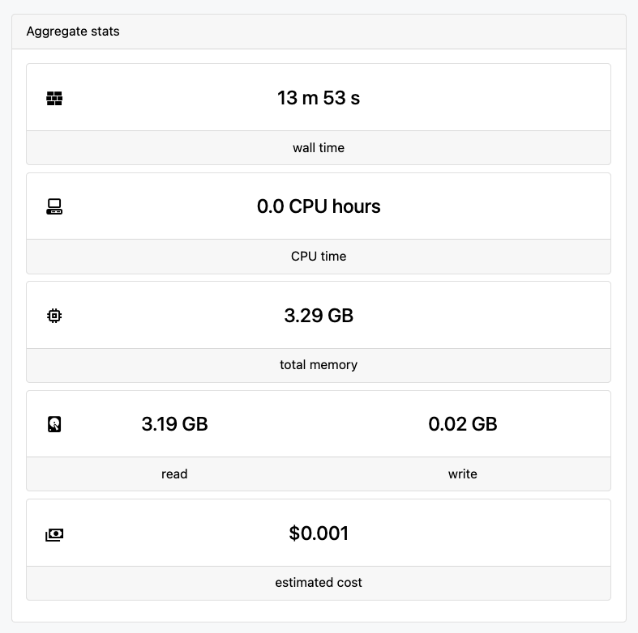
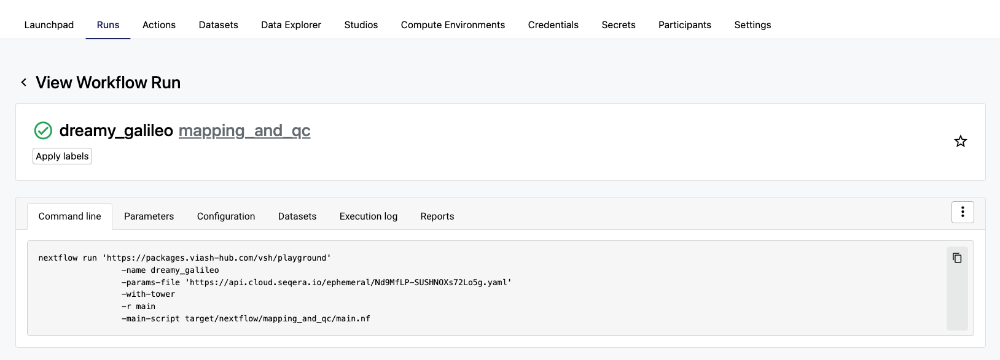
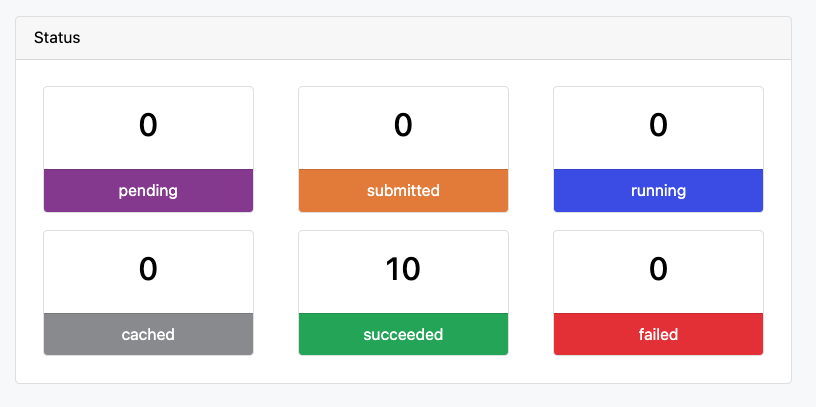
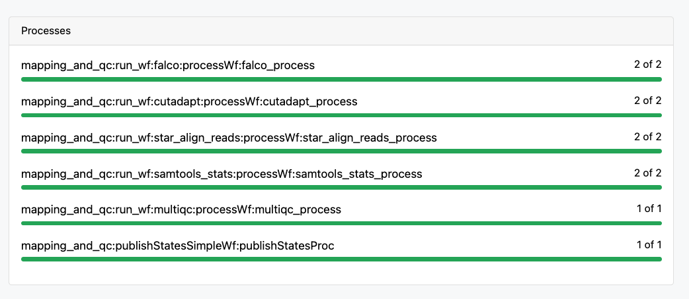

Cloud-Scale Bioinformatics - Running Viash Workflows on Cloud Platforms
cloud bioinformatics, scalable workflows, workflow deployment, Viash cloud execution, Nextflow Tower, Seqera Platform, cloud-native pipelines, bioinformatics on Google Cloud, workflow automation, Viash workflows, cloud-scale data analysis, workflow orchestration tools, containerized bioinformatics, DevOps-free workflows
Part 4: Cloud-Scale Bioinformatics: Running Viash Workflows on Cloud Platforms
TL;DR: In our previous posts, we explored how to run Viash modules and workflows locally, both on your native host system and with Docker. Now, we’ll discover how we run these same workflows at scale on cloud platforms — zero code changes and zero DevOps knowledge required.
From Laptop to Cloud
Traditional approaches to scaling bioinformatics analyses to the cloud involve numerous technical challenges requiring specialized DevOps knowledge and weeks of implementation time, whereas Viash workflows can seamlessly run on cloud platforms without adjusting any code to the workflows themselves.
Let’s explore how to take our Mapping and QC workflow from the previous post in this series and run it on your cloud platform of choice (e.g. Google, AWS or Azure) using Seqera Platform (formerly Nextflow Tower).
As explored in our previous blogpost, we’ll make use of the code repo in https://github.com/viash-hub/playground.
1. Store the data on a cloud bucket
If you haven’t done so already during the tutorial in the previous blogpost, let’s install the test data.
# Generate test data
./test_data.shIn this tutorial we will move the data to a Google Cloud bucket, but it can be any storage bucket of choice.
# Shuttling the data to Google Cloud
gsutil -m cp -r ./test_data/* gs://bucket-name/test_data/2. Generate a params file
Now we update our params file to point to the test data in the cloud bucket.
PARAMS_FILE=remote_params.yaml
TEST_DATA_DIR=gs://bucket-name/test_data/
cat >$PARAMS_FILE <<EOF
param_list:
- id: SRR1569895
input_r1: $TEST_DATA_DIR/SRR1569895_1_subsample.fastq
input_r2: $TEST_DATA_DIR/SRR1569895_2_subsample.fastq
- id: SRR1570800
input_r1: $TEST_DATA_DIR/SRR1570800_1_subsample.fastq
input_r2: $TEST_DATA_DIR/SRR1570800_2_subsample.fastq
publish_dir: foo
reference: $TEST_DATA_DIR/S288C_reference_genome_Current_Release_STAR
EOF3. Optional - optimize resource usage
Thanks to the components-based approach in Viash workflows, we can easily adjust the amount of resources needed to run this workflow at scale!
cat > nextflow.config << HERE
process {
withName:'.*falco_process' {
memory = { 200.MB * task.attempt }
}
withName:'.*cutadapt_process' {
memory = { 50.MB * task.attempt }
}
withName:'.*star_align_reads_process' {
memory = { 2.GB * task.attempt }
}
withName:'.*samtools_stats_process' {
memory = { 50.MB * task.attempt }
}
withName:'.*multiqc_process' {
memory = { 200.MB * task.attempt }
}
}
HERE4. Launch the Workflow on Seqera Platform
First, export the required keys from your Seqera Cloud set-up. This step requires having configured an adequate compute environment, either on the public Seqera Cloud platform or your own Seqera deployment.
export COMPUTE_ENV=<your_seqera_compute_environment_id>
export WORKSPACE_ID=<your_seqera_workspace_id>Then we can simply launch the workflow using the tw launch command:
tw launch https://packages.viash-hub.com/vsh/playground \
--revision main \
--main-script target/nextflow/mapping_and_qc/main.nf \
--params-file remote_params.yaml \
--workspace $WORKSPACE_ID \
--compute-env $COMPUTE_ENV \
--config nextflow.config # optionalNote that we need to have a built workflow stored in a code repository to make use of this tw launch command. Luckily, all tools and workflows of the Viash Catalogue have been pre-built and are stored in the viash-hub repo!
5. Monitor the workflow run
Using the Seqera Cloud web interface, we can now follow the run and monitor its status.




Why This Matters
Moving bioinformatics workflows to the cloud typically presents numerous challenges that require specialized knowledge and significant time investment. However, with Viash workflows, this transition becomes remarkably simple. As demonstrated in this guide, scaling from a laptop to cloud infrastructure requires minimal changes—just pointing to cloud storage locations and utilizing Seqera Platform to manage the execution.
This approach eliminates the need for cloud-specific code adaptations or DevOps expertise, allowing researchers to focus on their scientific questions rather than infrastructure management. The ability to seamlessly scale processing power while maintaining the same workflow structure represents a significant advantage for handling large-scale bioinformatics analyses efficiently.
Wrapping Up the Series
This post concludes our four-part series on Viash tools and workflows. We’ve journeyed from the basics of component creation to running workflows at scale on cloud platforms!
Recap of what we’ve covered:
- Creating a simple bioinformatics module
- Leveraging “batteries included” features for advanced tool management
- Developing Nextflow workflows with a component-based approach
- Running workflows at scale with zero code changes
We hope this series has demonstrated how Viash can simplify your bioinformatics pipeline development and deployment process, allowing you to focus on what matters most—your research.
For more information about Viash, please visit our website or documentation page. We’re continuously improving our tools and documentation based on user feedback.
Have questions or want to share how you’re using Viash in your research?
We’d love to hear from you! Reach out to us on LinkedIn or contact us directly at info@data-intuitive.com.
Thank you for following along with this series, and happy coding!